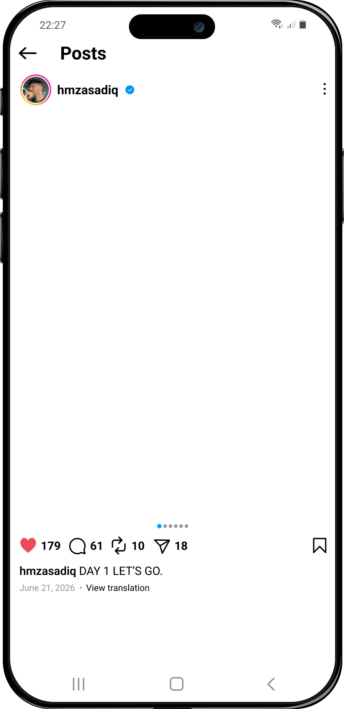
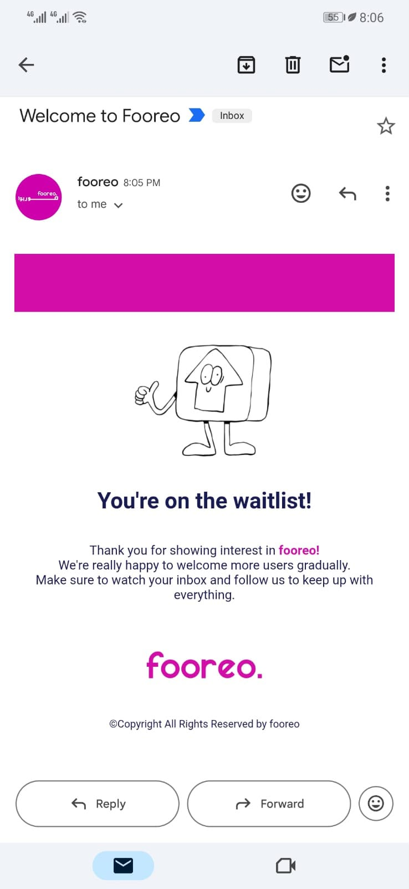
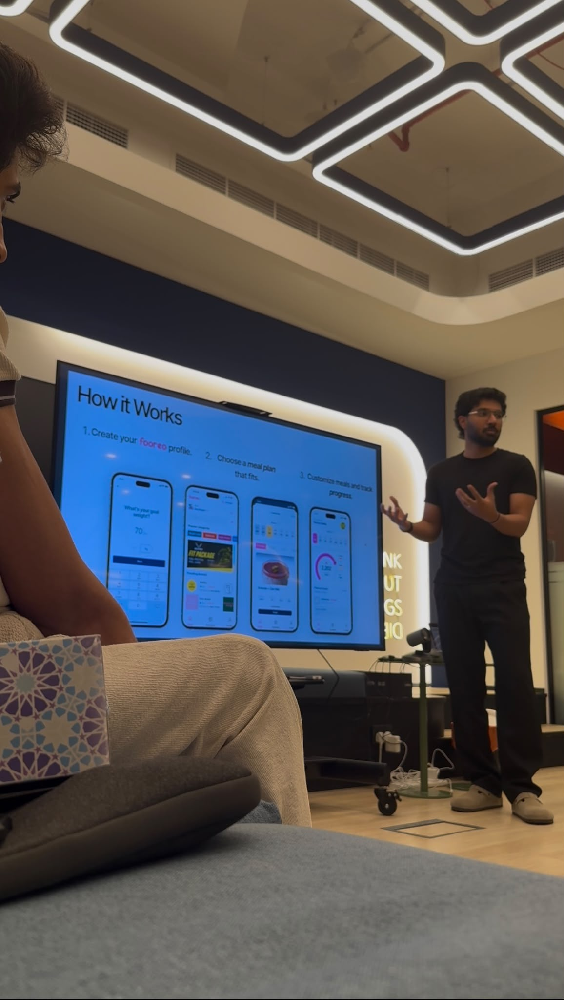
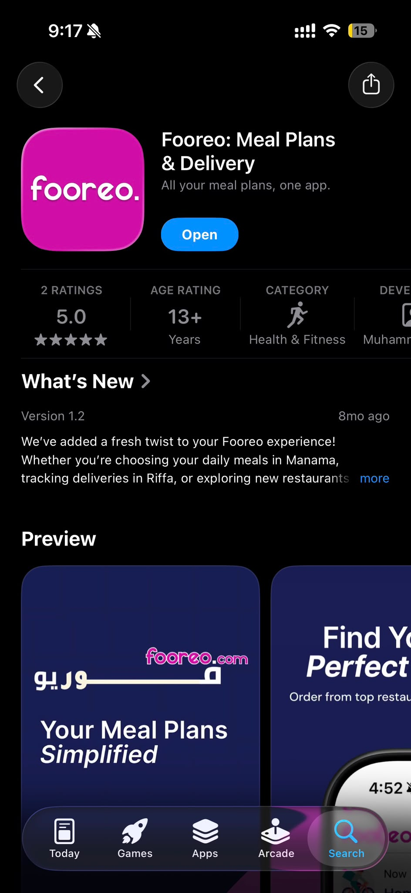
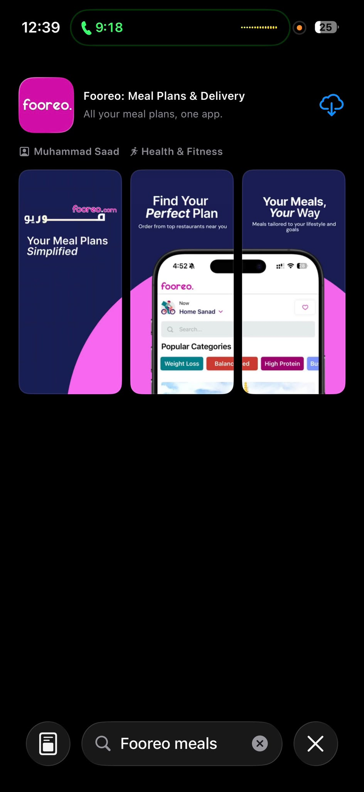
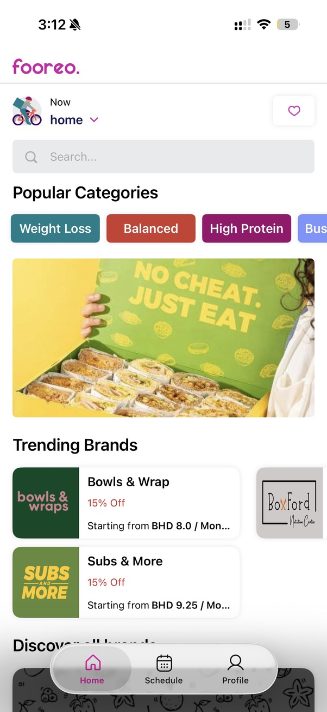

The commitment


I'm a product Manager from Bahrain making useful things for the internet and exploring the world.

The personal origin
Most people don’t discover a food-tech problem after donating part of their liver. I did. In 2021, I donated more than 60% of mine. Recovery changed how deliberately I thought about health and nutrition, and, when I returned to Bahrain, I started subscribing to meal plans.
The food was convenient. The experience around it wasn’t. Comparing providers was messy, subscriptions felt fragmented, and changing anything often meant chasing someone on WhatsApp.
I was working in fintech at the time. The problem stayed with me until I left my job and co-founded Fooreo.
Fooreo
01
The original insight came from trying to navigate Bahrain’s meal-plan market myself. The opportunity was not simply another food app. It was a clearer layer between customers and meal-plan providers.
02
Before launch, Fooreo had a waitlist. This is an early confirmation email.
An early Fooreo waitlist confirmation.

03
I pitched the concept and worked through the model to turn the idea into a live product.
Presenting the early Fooreo product and customer journey.

04
Fooreo launched on the App Store as a marketplace for discovering and subscribing to meal plans in Bahrain.



05
Fooreo went from an idea to a live marketplace that generated revenue. The scale was early, but the transaction changed the problem from theoretical to operational.
The marketplace was the visible layer. Behind it were restaurant onboarding, menu configuration, recurring orders, customer management, fulfilment and the exceptions that appear once real orders begin moving through a system.
This was where I learned that a good consumer experience depends on operational systems working reliably behind it. When schedules, partners, deliveries or support fail, the customer experiences it as one broken product.
Launching the product was only one part of the work. The harder questions appeared afterwards: how to keep both sides of a marketplace moving, how operational friction reaches the customer, and how quickly manual work becomes a product problem.
Fooreo gave me direct exposure to those questions. It did not give me years of experience operating kitchens or supply chains at Calo’s scale.
That gap is real. So is the relevance of having built in the same category from the customer, partner and product sides.
Calo is working on the version of this problem I did not get to reach: connecting the customer experience to kitchens, capacity, supply chain, logistics and the internal tools that hold the operation together.
I’m not chasing a senior title. I’m looking for the right Product Manager, Associate Product Manager, Product Operations or marketplace role where I can be useful and grow into the scale of the problem. Hell, I’d even join as an intern on a product team if that’s where I could learn the most and contribute.
I built in this category once. I would like to keep going.
Contact
I’m based in Bahrain and open to relocating for the right opportunity.